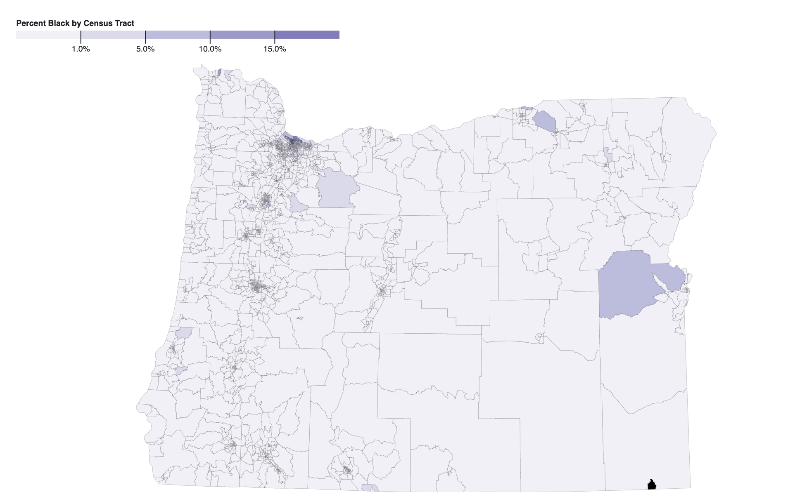

This portfolio contains the assignments completed during the spring 2021 term of Geographic Visualization

This choropleth map shows that Oregon has a proportionally low Black population throughout the entire state. The largest percentage of any census track is ~16% and occurs in the northwest/central area where Portland is located. This makes sense as many cities have larger minority populations. Oregon has a 3% Black population, so it would make sense that the Black population has proportionally low numbers throughout the state.